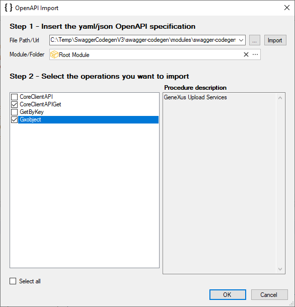
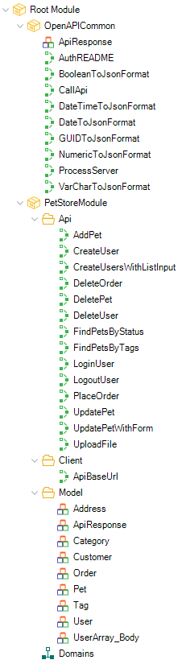

OpenAPI import tool
The main purpose of the OpenAPI import tool is to inspect the Open Api RESTful API Documentation (formerly known as Swagger RESTful API Documentation Specification) of any RESTful web service that may or may not be generated by GeneXus.
With the information obtained using the OpenAPI Import tool, implementing a consumer is much more plain sailing because it consolidates in the KB some objects (Procedures, SDTs, and Domains) that are necessary to consume the RESTful service. After that, it's easy to follow the tutorial HowTo: Inserting data using a BC exposed as Rest service.
The advantage of using the OpenAPI import tool is to avoid the effort of Getting information from the Swagger UI docs, such as operations, HTTP verb needed to consume the web service, input and output parameters (the HTTP body structure for invoking the service and responses).
Note that the OpenAPI documentation of Rest web services in GeneXus is obtained through the Generate OpenAPI interface property.
The tool is accessible through the Tools > Application Integration > OpenAPI import menu option.

OpenAPI import tool dialog
File Path / URL: Enter the URL or file path of the RESTful service documentation in Swagger format.
Swagger Format:
The files describing the RESTful API in accordance with the Swagger specification are represented as JSON objects and conform to JSON standards. YAML, being a superset of JSON, can be used as well to represent a Swagger specification file.
For Rest web services in GeneXus you can obtain the Swagger file if you activate the Generate OpenAPI interface property.
Module / Folder: Where the automatically generated objects will be located.

Note: It's strongly recommended to choose a module where the objects automatically created from the YAML file will be located in order to maintain KB modularization and avoid undesired object modifications.
For example, if a structure named "Customers" is included in the YAML file, a "Customers" SDT will be created when this YAML is imported. If an SDT named "Customers" already exists in the KB, it will be modified (replaced by the structure included in the YAML file). If the imported objects are created in a module (e.g. CRM), the SDT will be created as "CRM.Customers" and will not replace the existing one.
Results of using the OpenAPI import tool
The tool consolidates in the KB some objects (procedures, SDTs, domains) necessary to consume the RESTful service.
Below is a summary of the objects consolidated in the KB:
| Object | Folder / Module | Purpose |
| ApiResponse SDT | OpenAPICommon | Defines the HTTP response structure |
| CallApi procedure | OpenAPICommonP | Parameterized procedure that, given the service URL and the call parameters, executes the HTTP verb and returns the HTTP result. |
| VarCharToJsonFormat, DateTimeToJsonFormat, DateToJsonFormat, NumericToJsonFormat |
OpenAPICommon | Auxiliary procedures |
| AuthREADME (*) | OpenAPICommon | Procedure showing information obtained from imported specifications about OAuth 2.0 and/or OpenID Connect flows. |
| ProcessServer (*) | OpenAPICommon | As server templating is allowed in OpenAPI 3.0, this procedure addresses the replacement of the values given by the user when calling a procedure under the "API" folder (through the &ServerUrlTemplatingVar parameter) in the baseURL. |
| ApiBaseUrl | <MyModule>\Client |
Returns the BaseURL that will be used for calling the RESTful services. It should be changed in most cases. When OpenAPI 3.0 specification is imported, this procedure shows all the servers present in the specification, leaving only one uncommented (the first one). |
| Client procedure of the RESTful service | <MyModule>\Api |
A procedure to invoke the service. The name of this procedure is selected upon the operationId* in the documentation file (Swagger) of the service. *operationId: Unique string used to identify the operation. The ID is unique among all operations described in the API. |
| SDTs needed for defining the input and output parameters of the service. | <MyModule>\Model | Input and output parameters of the service. |
(*) Generated when importing version 3 only.
Example
This example shows the import of PetStore specification.
KB Explorer structure example
The following is the KB Explorer structure after importing the YAML file associated with the procedure of the example.

After inspecting the Swagger document of PetStore using the OpenAPI Import tool in the consumer KB, it automatically generates a procedure called CreateUsersWithListInput under the PetStoreModule\Api path. "PetStoreModule" is a module in this example, which has been set to import the objects generated by the tool.
Below is the part of the Swagger document corresponding to the service being inspected. Note the operationId value that determines the name of the procedure to consume the RESTful service.
/user/createWithList: post: tags: - user summary: Creates list of users with given input array description: Creates list of users with given input array operationId: createUsersWithListInput requestBody: content: application/json: schema: type: array items: $ref: '#/components/schemas/User' responses: '200': description: Successful operation content: application/xml: schema: $ref: '#/components/schemas/User' application/json: schema: $ref: '#/components/schemas/User' default: description: successful operation
The User is an SDT automatically generated by the tool for both RequestBody and Response (in this case, it matches the type, but this is not always the case).
The parameter information is also obtained from the Swagger file.
components: schemas: ... User: type: object properties: id: type: integer format: int64 example: 10 username: type: string example: theUser firstName: type: string example: John lastName: type: string example: James email: type: string example: john@email.com password: type: string example: '12345' phone: type: string example: '12345' userStatus: type: integer description: User Status format: int32 example: 1 xml: name: user
The following Parm rule is generated in the CreateUsersWithListInput consumer object that is a stub for calling the service.
parm(in:&ServerUrlTemplatingVar, in:&body, out:&UserOUT, out:&HttpMessage, out:&IsSuccess);
The &ServerUrlTemplatingVar parameter is present in all consumer procedures. This is a variable of "Properties" type, which is responsible for assigning values in the template variables at the baseURL. As an example, suppose you have the following baseURL:
{scheme}://{host}:8082/APIObjectPlayground.NETCoreEnvironment/rest
&ServerUrlTemplatingVar can be set as follows:
&ServerUrlTemplatingVar.Set("scheme","https")
&ServerUrlTemplatingVar.Set("host","example")
As a result, the baseURL remains as:
https://example:8082/APIObjectPlayground.NETCoreEnvironment/rest
To simplify the assignment of values for this templating, domains may be generated containing enums with possible value ranges to assign. These domains are named, for example, "TemplateServer_{key_name}." Continuing with the previous case, if a domain had been generated for the "scheme" key, its name would have been "TemplateServer_scheme." This is done if and only if the specification has indicated the enum.
So, in order to call the service, you need to call the CreateUsersWithListInput consumer object by passing it the corresponding parameters and then processing the results.
Sample consumer code
PetStoreModule.CreateUsersWithListInput(&ServerUrlTemplatingVar,&User,&UserOUT,&HttpMessage,&IsSuccess)
if &IsSuccess
msg("Success!!")
else
msg("There was an error! ")
endif
msg("API return: " + &UserOUT.ToJson())
msg("HTTP Message " + &HttpMessage.Id + " " + &HttpMessage.Description)
This is rather easier than defining the input and output parameters manually and executing the HTTP verbs using HTTP client data type. This task is done by the OpenAPI Import tool, which generates the code for you.